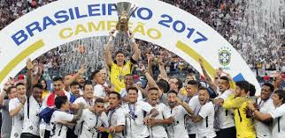

Às 20h30 do dia 1º de setembro, à luz de um lampião, na esquina das ruas José Paulino e Cônego
Martins, no bairro do Bom Retiro, o grupo de operários formado por Anselmo Corrêa, Antônio
Pereira, Carlos Silva, Joaquim Ambrósio e Raphael Perrone fundaram o Sport Club Corinthians
Paulista. Com mais oito rapazes, foi formada a reunião dos primeiros integrantes e sócio
fundadores do Timão, que teve seu nome inspirado na equipe inglesa Corinthian Football Club,
que fazia excursão pelo Brasil. O presidente escolhido por eles foi o alfaiate Miguel Battaglia,
que, já no primeiro momento, afirmou: “O Corinthians vai ser o time do povo e o povo é quem
vai fazer o time”. Um terreno alugado na Rua José Paulino foi aplainado, virou campo e foi lá
que, já no dia 14 de setembro, o primeiro treino foi realizado diante de uma plateia entusiasmada,
que garantiu: “Este veio para ficar!”.

Primeiro título do Sport Club Corinthians Paulista. Com 10 vitórias em 10 jogos disputados,
o Timão marcou 37 gols e venceu a última partida por 3 a 0, contra o Lusitano, no Parque
Antártica. O atacante Neco foi o artilheiro do torneio com 12 gols. O Alvinegro conquistou o
Campeonato Paulista com uma rodada de antecedência. No dia 08 de novembro, a equipe derrotou
o Campos Elyseos por 4 a 0 e sagrou-se campeã com a seguinte escalação: Aristides, Fúlvio e
Casemiro González; Police, Bianco e César Nunes; Américo, Peres, Amílcar, Apparício e Neco.
Anos das conquistas 1914, 1916, 1922, 1923, 1924, 1928, 1929, 1930, 1937, 1938, 1939, 1941,
1951, 1952, 1954, 1977, 1979, 1982, 1983, 1988, 1995, 1997, 1999, 2001, 2003, 2009, 2013,
2017, 2018, 2019 e 2025.
Anos das conquistas 1990, 1998, 1999, 2005, 2011, 2015, 2017.
Anos das conquistas 1995, 2002, 2009
Ano da Conquista 2012
Anos das conquistas 2000, 2012